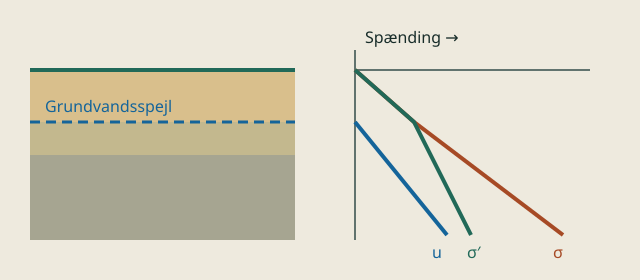

Undervisning med Lærebog i Geoteknik, 3. udgave
Geoteknik i praksis
Fra jordprøven til konstruktionen. Vælg et emneområde, og undersøg sammenhængene med interaktive figurer og beregninger.
Vælg et emneområde

Emneområde A · 4 øvelser
Jords karakterisering og mekaniske egenskaber
Fra jordprøve og klassifikation til deformation og styrke.
Udforsk emnet →
Emneområde B · 2 øvelser
Spændinger i jord
Forstå totalspændinger, poretryk og effektive spændinger.
Udforsk emnet →
Emneområde C · Planlagte emner og relaterede øvelser
Grundvandsstrømning
Undersøg vandets strømning og betydning for jordens stabilitet.
Udforsk emnet →
Emneområde D · 3 øvelser
Geotekniske konstruktioner
Anvend jordens egenskaber til at undersøge bæreevne, sætninger og stabilitet.
Udforsk emnet →Advanced Geotechnics
Explore clay yielding and critical state behaviour in a virtual laboratory.
Open the Modified Cam Clay simulator →Alle øvelser
Gå direkte til en af de eksisterende øvelser.